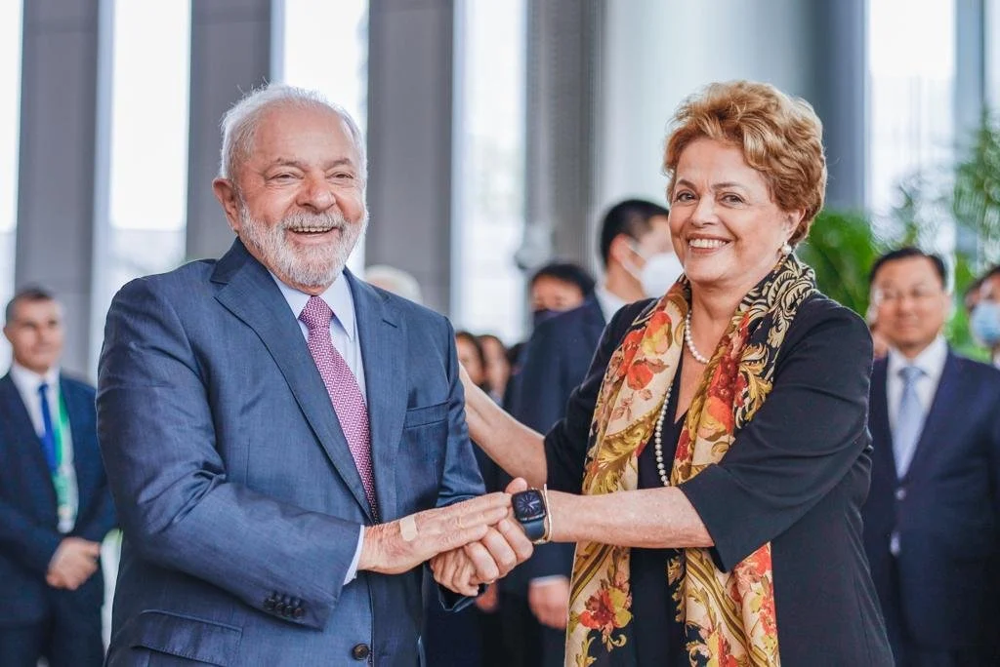

Bibliografia
Dilma Vana Rousseff (Belo Horizonte, 14 de dezembro de 1947) é uma economista e política brasileira.
Filiada ao Partido dos Trabalhadores (PT), foi a 36ª Presidente do Brasil, tendo exercido o cargo de
2011 até seu afastamento por um processo de impeachment em 2016. Atualmente preside o Novo Banco de
Desenvolvimento (Banco do BRICS), sediado em Xangai, na China.